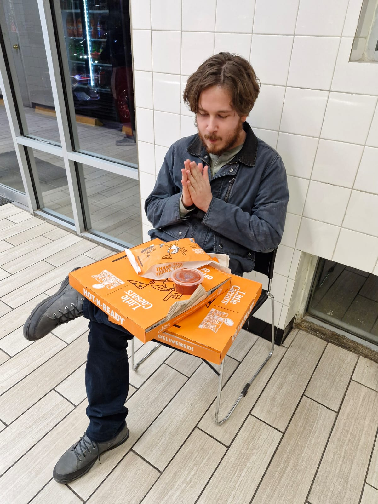

About Me

[Your Name] is [brief bio placeholder]. [More bio text here].
Education
- Degree 1: [Institution], [Year]
- Degree 2: [Institution], [Year]
Work Experience
- Position 1: [Company/Organization], [Dates] - [Description]
- Position 2: [Company/Organization], [Dates] - [Description]
Publications
- [Publication 1 Title], [Journal/Conference], [Year]
- [Publication 2 Title], [Journal/Conference], [Year]
Presentations
- [Presentation 1 Title], [Event], [Year]
- [Presentation 2 Title], [Event], [Year]
Latest Posts
-
Quill Text Editor - April 27, 2026
-
Welcome to My Blog - April 26, 2026
-
Masters Thesis - April 26, 2026